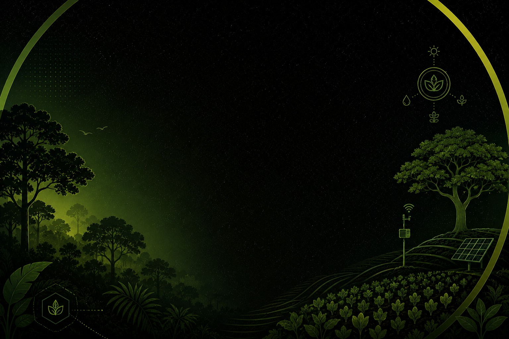

Identificação botânica
Reconheça as espécies no campo e na cozinha: nome científico, características e com o que cada planta pode ser confundida.

Porto Velho · RO
Inteligência que brota da nossa terra para o seu prato.
Agricultura sustentável · ODS 2 da ONU
Você sabia que o que vai para o seu prato tem o poder de transformar o planeta e combater a fome?
Grandes órgãos como a FAO (a parte da ONU que cuida dos alimentos) e a Embrapa defendem que a agricultura sustentável é uma das maiores armas contra a fome. O segredo não é só produzir toneladas de comida, mas fazer isso respeitando o meio ambiente e garantindo a nossa soberania alimentar — o direito de o nosso país e as nossas comunidades decidirem como produzir e consumir a própria comida, de forma saudável e independente.
Por que comprar direto das feiras?
Combate ao desperdício: no sistema dos grandes supermercados, 28% dos alimentos são desperdiçados no final da cadeia na América Latina, segundo a FAO. A feira local reduz o trajeto e o tempo de transporte, garantindo alimentos mais frescos.
Preço justo para você e para o campo: comprando direto do produtor familiar, sem atravessadores, o custo cai para quem consome em Porto Velho e gera renda digna para quem planta — combatendo a fome nas duas pontas.
Mais saúde e biodiversidade: alimentos cultivados respeitando o tempo da natureza, preservando os nutrientes essenciais para o seu corpo, sem esgotar o solo e a nossa rica floresta.
Encontre a feira sustentável mais perto de você, apoie os produtores locais e redescubra o prazer de comer bem em Porto Velho. Clique no pin e depois no nome da feira para ver dia, endereço e horários.
Feira Sabor do Norte
Aproveitamento integral dos alimentos
Você já parou para pensar em quanta comida boa vai parar no lixo da sua casa todas as semanas?
A Cozinha Zero Desperdício é um movimento e uma prática: usar os alimentos de forma 100% integral. Aquela casca, talo, folha ou semente que a maioria joga fora no automático aqui vira ingrediente principal — com valor nutricional gigante e muito sabor, transformada em farinhas caseiras, doces, refogados, chips e caldos.
O conceito nasceu para enfrentar um problema absurdo do nosso sistema alimentar: enquanto milhões de pessoas passam fome, toneladas de comida em perfeitas condições são descartadas todos os dias.
Aproveitamento integral: uso total do alimento para maximizar nutrientes e eliminar o lixo orgânico.
Economia doméstica: redução inteligente nos gastos com alimentação no dia a dia da família.
Combate ao desperdício: consciência contra o descarte desnecessário nas cidades.
Proteção ao planeta: comer o alimento por inteiro significa otimizar a água, a terra e a energia que foram gastas para produzi-lo.
Quer colocar a mão na massa? Acesse o e-book abaixo e descubra como transformar o que iria para o lixo em pratos incríveis.
Outro pilar essencial
O que você faria se soubesse que aquele "mato" ou "erva daninha" que cresce na calçada ou no quintal pode ser um superalimento?
A sigla PANC significa Plantas Alimentícias Não Convencionais: vegetais, folhas, frutos ou raízes comestíveis de alto valor nutritivo que você não encontra facilmente no supermercado. O que é "não convencional" muda com a cultura — uma planta ignorada na sua rua pode ser o ingrediente principal e valorizado na mesa de outra comunidade.
Os 4 superpoderes das PANC
Nutrição sem gastar nada: riquíssimas em vitaminas e minerais. Como nascem sozinhas, garantem comida saudável de graça.
Resistência e combate à fome: crescem fácil em qualquer canto e aguentam bem o clima, garantindo que ninguém fique sem comer.
Cultura e história viva: guardam os saberes de indígenas, ribeirinhos e quilombolas sobre a época certa de colher e cozinhar.
Proteção da Amazônia: valorizar as PANC protege a biodiversidade da floresta e mostra o potencial alimentício da natureza ao redor.
Na região Norte, elas fazem parte da nossa identidade e estão nos pratos mais tradicionais:
Catálogo científico
Não sabe se aquela planta no quintal é comestível ou mato?
O nosso catálogo foi criado para valorizar a biodiversidade da região e te dar autonomia: um banco de dados para fazer a identificação botânica correta de cada espécie nativa, com segurança.
Abra a ficha de cada planta para ver o nome científico, características visuais (para nunca confundir com espécies perigosas), dicas de cultivo, uso na cozinha e cuidados especiais.
Reconheça as espécies no campo e na cozinha: nome científico, características e com o que cada planta pode ser confundida.
Um catálogo focado na valorização da biodiversidade e das espécies nativas da Região Amazônica.
Nenhuma planta encontrada com essa busca ou filtro.
Segurança em primeiro lugar: identifique a planta com certeza antes de consumir, prefira exemplares longe de trânsito e agrotóxico, e respeite as recomendações de cozimento de cada ficha. Na dúvida, não coma.
Para se aprofundar
Iniciativas e fontes confiáveis sobre PANC, agroecologia e alimentação consciente.
Quem faz
Muito além de um projeto de sala de aula, o Conexão BeraVerde nasce do desejo de transformar conhecimento em impacto real.
Durante a Semana de Educação para a Vida 2026, nós, estudantes do 1º ano A do Curso Técnico em Informática do Instituto Federal de Rondônia (IFRO) — Campus Porto Velho Calama, fomos desafiados a refletir e promover a conscientização sobre um dos temas mais urgentes da nossa sociedade: Fome e Agricultura Sustentável.
Nossa jornada começou com um vídeo de 5 minutos inspirado no programa Shark Tank, defendendo o Conexão BeraVerde como uma solução viável e inovadora. Mas 5 minutos eram pouco para a imensidão desse desafio — e decidimos ir além da teoria.
Unindo a base tecnológica que construímos no IFRO à nossa responsabilidade social, o Conexão BeraVerde nasceu como a ponte entre a informação e a ação, dando à nossa comunidade acesso a:
Mapa das Feiras Sustentáveis: informações práticas e a localização de feirinhas que vendem direto do produtor na capital.
Cozinha Zero Desperdício: guias e receitas sobre o aproveitamento integral dos alimentos.
PANC: uma introdução às Plantas Alimentícias Não Convencionais e como inseri-las no dia a dia com segurança, com um catálogo para identificá-las.
Este é o nosso ponto de partida. Esperamos que este espaço seja útil, informativo e uma ferramenta real de transformação na mesa dos porto-velhenses. Sejam bem-vindos ao Conexão BeraVerde!
Turma: 1º Ano A de Informática
Professora Conselheira: Rubenice Sales Taborda